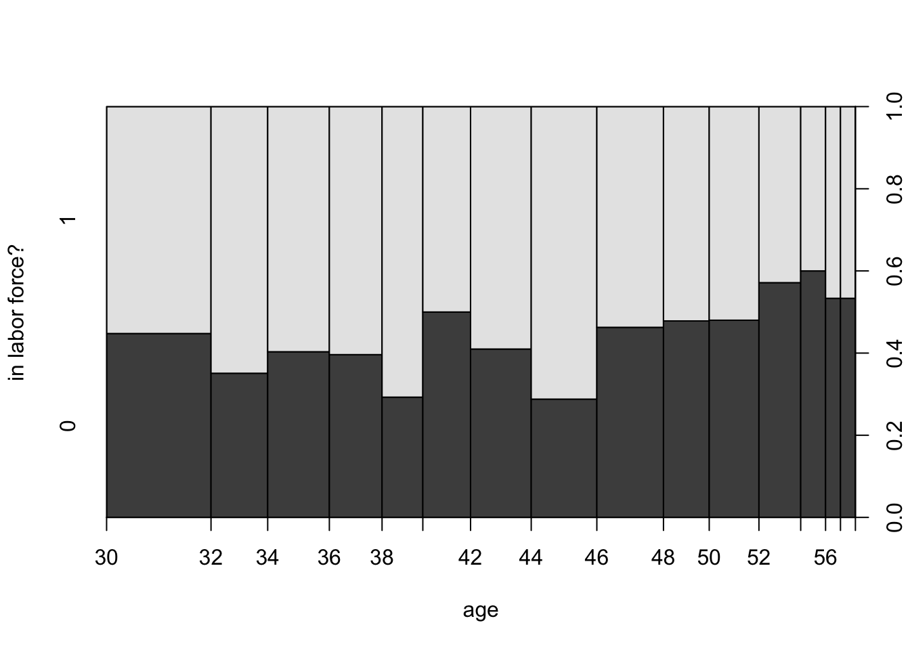
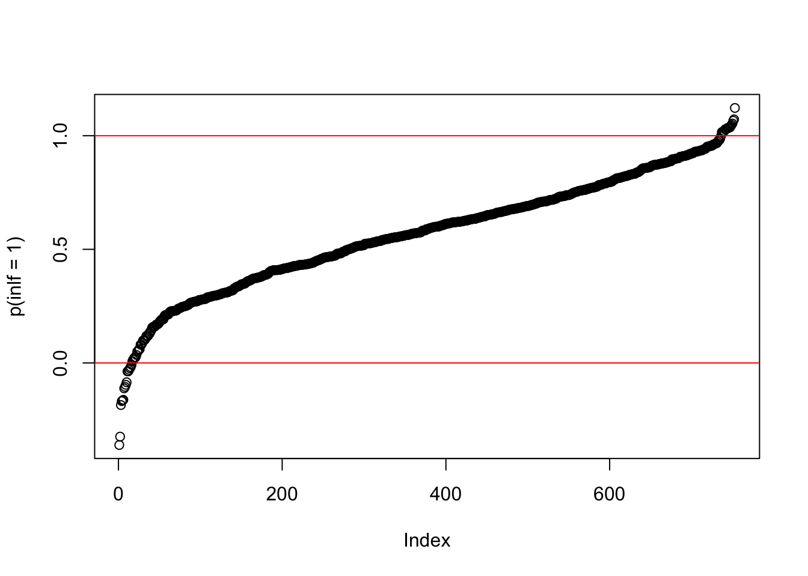
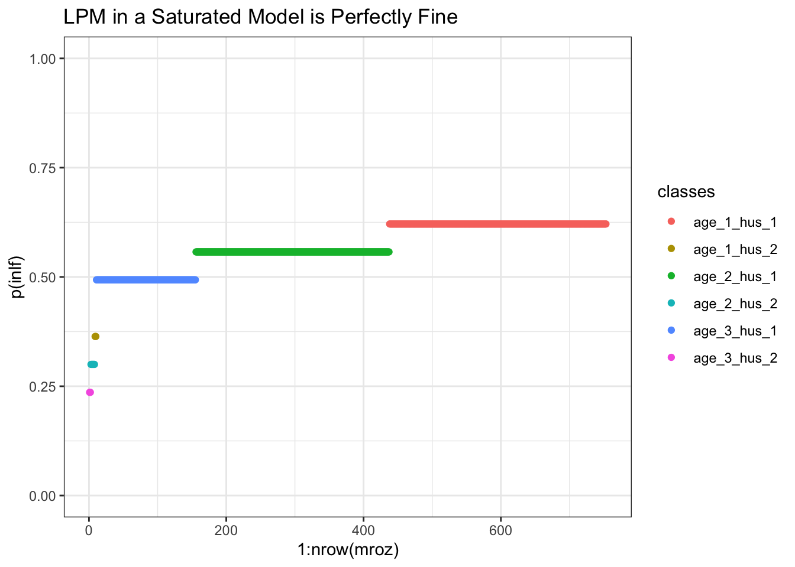
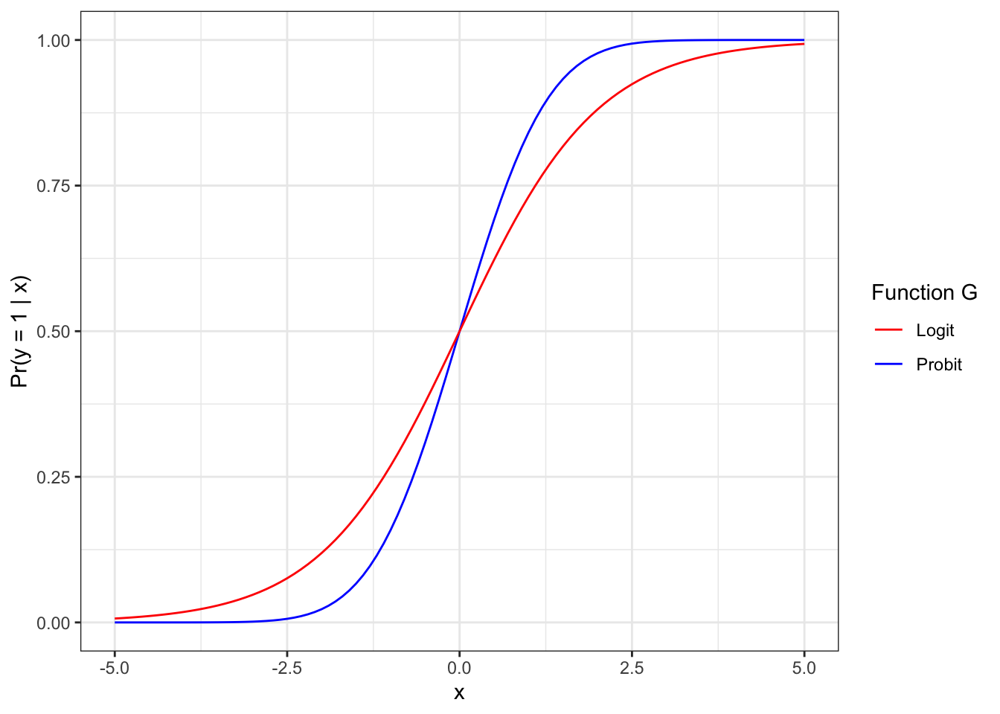

data(mroz, package = "wooldridge")
plot(factor(inlf) ~ age, data = mroz,
ylevels = 2:1,
ylab = "in labor force?")
Until now we have encountered only contiunously distributed outcomes on the right hand side of our estimation equations. For example, in our typical linear model, we would define
\begin{align} y &= b_0 + b_1 + e \\ e &\sim N\left(0,\sigma^2\right) \end{align}
where the second line defines the unobservable e to be drawn from the Normal distribution with mean zero and variance \sigma^2.1 That means that, at least in principle, y could be any number from the real line (e could be arbitrarily small or large), and we can say that y \in \mathbb{R}.
For the outcomes we studied, that was fine: test scores, earnings, crime rates etc are all continuous outcomes. But some outcomes are clearly binary (i.e. either TRUE or FALSE):
In this situation, our outcome is restricted to come from a small set of values: FALSE vs TRUE, or 0 vs 1. We’d have y \in \{0,1\}. In those situations we are primarily interested in estimating the response probability or the probability of success,
p(x) = \Pr(y=1 | x), or in words, the probability to observe y=1 (a success), given explanatory variables x. In particular, we will often be interested in learning how p(x) changes as we change x - that is, we are interested in the same partial effect of x on the outcome as in our usual linear regression setup. Here, we ask
If we increase x by one unit, how would the probability of y=1 change?
It is worth reminding ourselves about two simple facts about binary random variables (i.e drawn from the Bernoulli distribution). So, we call a random variable y \in \{0,1\} such that
\begin{align} \Pr(y = 1) &= p \\ \Pr(y = 0) &= 1-p \\ p &\in[0,1] \end{align}
a Bernoulli random variable. In our setting, we just condition those probabilities on a covariate x, as above - that is, we measure the probability given that X takes value x:
\begin{align} \Pr(y = 1 | X = x) &= p(x) \\ \Pr(y = 0 | X = x) &= 1-p(x) \\ p(x) &\in[0,1] \end{align}
Of particular interest for us is the fact that the expected value (i.e. the average) of Y given x is
E[y | x] = p(x) \times 1 + (1-p(x)) \times 0 = p(x)
There are several ways to model such binary outcomes. Let’s look at them.
The Linear Probability Model (LPM) is the simplest option. In this case, we model the response probability as
\Pr(y = 1 | x) = p(x) = \beta_0 + \beta_1 x_1 + \dots + \beta_K x_K \tag{13.1}
Our interpretation is slightly changed to our usual setup, as we’d say a 1 unit change in x_1, say, results in a change of p(x) of \beta_1.
Estimation of the LPM as in equation Equation 13.1 can be performed by standard OLS. Let’s look at an example. The Mroz (1987) dataset let’s us investigate female labor market participation. How does a woman’s inlf (in labor force) status depend on non-wife household income, her education, age and number of small children? First, let’s look at a quick plot that shows how the outcome varies with 1 variable, age say:
data(mroz, package = "wooldridge")
plot(factor(inlf) ~ age, data = mroz,
ylevels = 2:1,
ylab = "in labor force?")
Not so much variation with respect to age, except for the later years. Let’s run the LPM now:
LPM = lm(inlf ~ nwifeinc + educ + exper
+ I(exper^2) + age +I(age^2) + kidslt6, mroz)
summary(LPM)
Call:
lm(formula = inlf ~ nwifeinc + educ + exper + I(exper^2) + age +
I(age^2) + kidslt6, data = mroz)
Residuals:
Min 1Q Median 3Q Max
-0.94194 -0.37773 0.08935 0.34283 0.97979
Coefficients:
Estimate Std. Error t value Pr(>|t|)
(Intercept) 0.3219554 0.4863667 0.662 0.50820
nwifeinc -0.0034271 0.0014531 -2.358 0.01861 *
educ 0.0374662 0.0073476 5.099 4.33e-07 ***
exper 0.0382568 0.0057700 6.630 6.44e-11 ***
I(exper^2) -0.0005649 0.0001895 -2.981 0.00296 **
age -0.0011177 0.0225100 -0.050 0.96041
I(age^2) -0.0001822 0.0002581 -0.706 0.48044
kidslt6 -0.2603675 0.0340826 -7.639 6.72e-14 ***
---
Signif. codes: 0 '***' 0.001 '**' 0.01 '*' 0.05 '.' 0.1 ' ' 1
Residual standard error: 0.4273 on 745 degrees of freedom
Multiple R-squared: 0.2637, Adjusted R-squared: 0.2568
F-statistic: 38.13 on 7 and 745 DF, p-value: < 2.2e-16You can see that this is identical to our previous linear regression models - with the exception that the outcome inlf takes on only two values, 0 or 1. The results from this: if non-wife income increases by 10 (i.e 10,000 USD), the probability of being in the labor force falls by 0.034 (that’s a small effect!), whereas an additional small child would reduce the probability of work by 0.26 (that’s large). So far, so simple.
One often-mentioned problem of this model is that fact that nothing restricts our predictions of p(x) to be proper probabilities, i.e. to lie in the unit interval [0,1]. You can see that quite easily here:
pr = predict(LPM)
plot(pr[order(pr)],ylab = "p(inlf = 1)")
abline(a = 0, b = 0, col = "red")
abline(a = 1, b = 0, col = "red")
This picture tells you that for quite a few observations, this model predicts a probability of working which is either greater than 1, or smaller than zero. This may or may not be a big problem for your analysis. If you only care about marginal effects (i.e. the \betas, that may be ok, in particular if you have discrete variables on the RHS; if you want actual predictions than that’s more problematic).
In the case of a saturated model - if we only have dummy explanatory variables - then this problem does not exist for the LPM:
library(magrittr)
library(dplyr)
library(ggplot2)
mroz %<>%
# classify age into 3 and huswage into 2 classes
mutate(age_fct = cut(age,breaks = 3,labels = FALSE),
huswage_fct = cut(huswage, breaks = 2,labels = FALSE)) %>%
mutate(classes = paste0("age_",age_fct,"_hus_",huswage_fct))
LPM_saturated = mroz %>%
lm(inlf ~ age_fct + huswage_fct, data = .)
mroz$pred <- predict(LPM_saturated)
ggplot(mroz[order(mroz$pred),], aes(x = 1:nrow(mroz),y = pred,color = classes)) +
geom_point() +
theme_bw() +
scale_y_continuous(limits = c(0,1), name = "p(inlf)") +
ggtitle("LPM in a Saturated Model is Perfectly Fine")
In figure Figure 13.1 each line segment corresponds to the average probability of work within that cell of people. For example you see that women from the youngest age category and lowest husband income (class age_1_hus_1) have the highest probability of working (0.621).
In this class of models we change the way we model the response probability p(x). Instead of the simple linear structure from above, we write
\Pr(y = 1 | x) = p(x) = G \left(\beta_0 + \beta_1 x_1 + \dots + \beta_K x_K \right) \tag{13.2}
You note that this is almost identical, only that the entire sum \beta_0 + \beta_1 x_1 + \dots + \beta_K x_K is now inside some function G(\cdot). The main property of G is that it can transform any value z\in \mathbb{R} you give it to a number in the interval (0,1). This immediately solves our problem of getting weird predictions for probabilities. The two most widely used forms of G are the probit and the logit model. here are both forms for G in one plot:
library(ggplot2)
ggplot(data.frame(x = c(-5,5)), aes(x=x)) +
stat_function(fun = pnorm, aes(colour = "Probit")) +
stat_function(fun = plogis, aes(colour = "Logit")) +
theme_bw() +
scale_colour_manual(name = "Function G",values = c("red", "blue")) +
scale_y_continuous(name = "Pr(y = 1 | x)")
You can see that
Let’s run the Mroz example from above in both probit and logit now:
probit <- glm(inlf ~ age,
data = mroz,
family = binomial(link = "probit"))
logit <- glm(inlf ~ age,
data = mroz,
family = binomial(link = "logit"))
modelsummary::modelsummary(list("probit" = probit,"logit" = logit))| probit | logit | |
|---|---|---|
| (Intercept) | 0.707 | 1.136 |
| (0.248) | (0.398) | |
| age | -0.013 | -0.020 |
| (0.006) | (0.009) | |
| Num.Obs. | 753 | 753 |
| AIC | 1028.9 | 1028.9 |
| BIC | 1038.1 | 1038.1 |
| Log.Lik. | -512.442 | -512.431 |
| F | 4.828 | 4.858 |
| RMSE | 0.49 | 0.49 |
From this table, we learn that the coefficient for age is -0.013 for probit and -0.02 for logit, respectively. In both cases, this tells us that the impact of an additional year of age on the probability of working is negative. However, we cannot straightforwardly read off the magnitude of the effect - how much does the probability decrease we can’t tell. Why is that?
One simple way to see this is to look back at figure Figure 13.2 and imagine we had just one explanatory variable (like here - age). The model is
\Pr(y = 1 | \text{age})= G \left(x \beta\right) = G \left(\beta_0 + \beta_1 \text{age} \right)
and the marginal effect of age on the response probability is
\frac{\partial{\Pr(y = 1 | \text{age})}}{ \partial{\text{age}}} = g \left(\beta_0 + \beta_1 \text{age} \right) \beta_1
\tag{13.3}
where function g is defined as g(z) = \frac{dG}{dz}(z) - the first derivative function of G (i.e. the slope of G). The formulation in Equation 13.3 is a result of the chain rule. Now, given that in figure Figure 13.2 we see G that is nonlinear, this means that also g will be non-linear: sometimes (close to the edges of the graph) the slope will be really small and close to zero, but sometimes (in the center of the graph), the slope will be really steep. You are able to try this out yourself using this app:
ScPoApps::launchApp("marginal_effects_of_logit_probit")So you can see that there is not one single marginal effect in those models, as that depends on where we evaluate expression Equation 13.3. Notice that the case is identical for more than one x. In practice, there are two common approaches:
Thankfully there are packages available that help us to compute those marginal effects fairly easily. One of them is called mfx, and we would use it as follows:
f <- "inlf ~ age + kidslt6 + nwifeinc" # setup a formula
glms <- list()
# the marginal effects versions (their `conditional` rows below reproduce
# the raw probit/logit coefficients from the table above exactly)
glms$probitMean <- mfx::probitmfx(formula = f,
data = mroz, atmean = TRUE)
glms$probitAvg <- mfx::probitmfx(formula = f,
data = mroz, atmean = FALSE)
glms$logitMean <- mfx::logitmfx(formula = f,
data = mroz, atmean = TRUE)
glms$logitAvg <- mfx::logitmfx(formula = f,
data = mroz, atmean = FALSE)
modelsummary::modelsummary(glms,
stars = TRUE,
gof_omit = "AIC|BIC",
shape = term + component ~ model)| component | probitMean | probitAvg | logitMean | logitAvg | |
|---|---|---|---|---|---|
| + p < 0.1, * p < 0.05, ** p < 0.01, *** p < 0.001 | |||||
| age | marginal | -0.014*** | -0.013*** | -0.014*** | -0.013*** |
| (0.003) | (0.002) | (0.003) | (0.003) | ||
| conditional | -0.035*** | -0.035*** | -0.057*** | -0.057*** | |
| (0.007) | (0.007) | (0.011) | (0.011) | ||
| kidslt6 | marginal | -0.314*** | -0.290*** | -0.322*** | -0.292*** |
| (0.044) | (0.036) | (0.046) | (0.047) | ||
| conditional | -0.800*** | -0.800*** | -1.313*** | -1.313*** | |
| (0.111) | (0.111) | (0.188) | (0.188) | ||
| nwifeinc | marginal | -0.004** | -0.004** | -0.005** | -0.004** |
| (0.002) | (0.001) | (0.002) | (0.002) | ||
| conditional | -0.011** | -0.011** | -0.019** | -0.019** | |
| (0.004) | (0.004) | (0.007) | (0.007) | ||
| (Intercept) | 2.080*** | 2.080*** | 3.394*** | 3.394*** | |
| (0.309) | (0.309) | (0.516) | (0.516) | ||
| Num.Obs. | 753 | 753 | 753 | 753 | |
| RMSE | 0.47 | 0.47 | 0.47 | 0.47 | |
In table Table 13.1 you should first note that the conditional rows (the raw \beta’s — identical to the probit/logit coefficients in the table above) don’t correspond to the marginal rows. As we have learned above, the raw coefficients alone are not informative, as the implied marginal effect depends on where one computes it. Hence the marginal rows compute the marginal effects either at the mean of all regressors (probitMean) or as the sample average over all effects in the data (probitAvg). You can notice some differences here, for example we find at the average regressor, an additional child below age of 6 reduces the probability of work by 0.314, whereas as an averag over all sample effects it reduces it by 0.29. Furthermore, you see that the marginal effect estimates between probit and logit don’t correspond exactly, which is a consequence of the different shapes of the curves in figure Figure 13.2. No one approach is correct here and depends on how your data is distributed (e.g. is the mean a good summary of the data here?). What is clear, though, is that in most cases reporting coefficient estimates only is not very informative (it only tells you the direction of any effect).
We have not insisted too much on the fact that e should be distributed according to the Normal distribution (this is required in particular for the theoretical derivation of standard errors, as discussed in the chapter on hypothesis testing, Chapter 5). However, we’d always have an unbounded and continuous distribution underlying our models↩︎